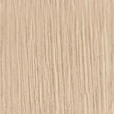
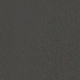

Externo Crepe Chumbo tecido · tom aproximado: a foto da amostra não mostra a etiqueta

Interno Carvalho Prata MDP BP madeirado · Novara

Mesa Grafite MDP BP liso · Novara
As texturas vêm das fotos das amostras, com a luz e o branco corrigidos. O desenho e as medidas das cabines saíram
das imagens de referência (não há ficha técnica), por isso são aproximados. O estofado dos bancos da Dupla não foi
informado e aparece em cinza. O showroom foi montado a partir do vídeo da Waymob (piso, vidro, estante, pilar e
móveis principais), em escala aproximada.